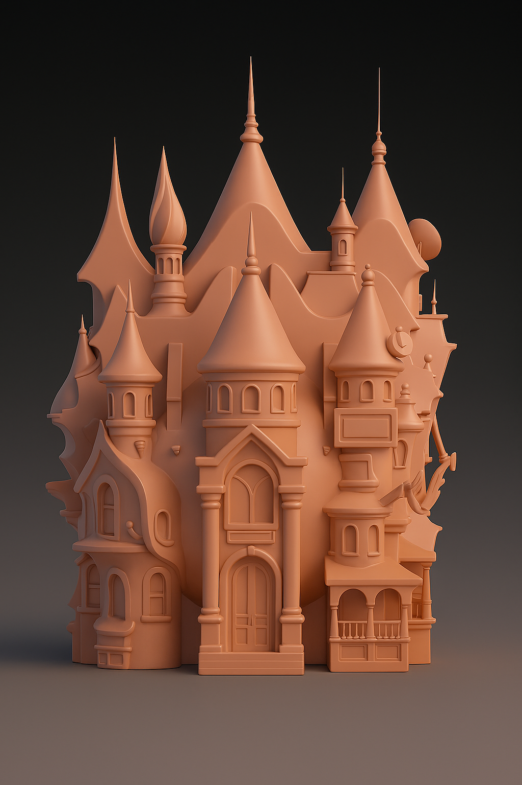
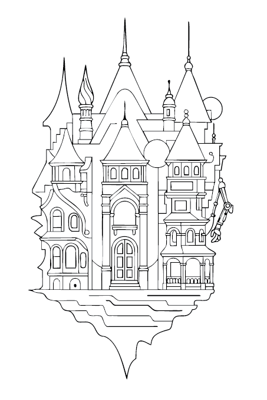
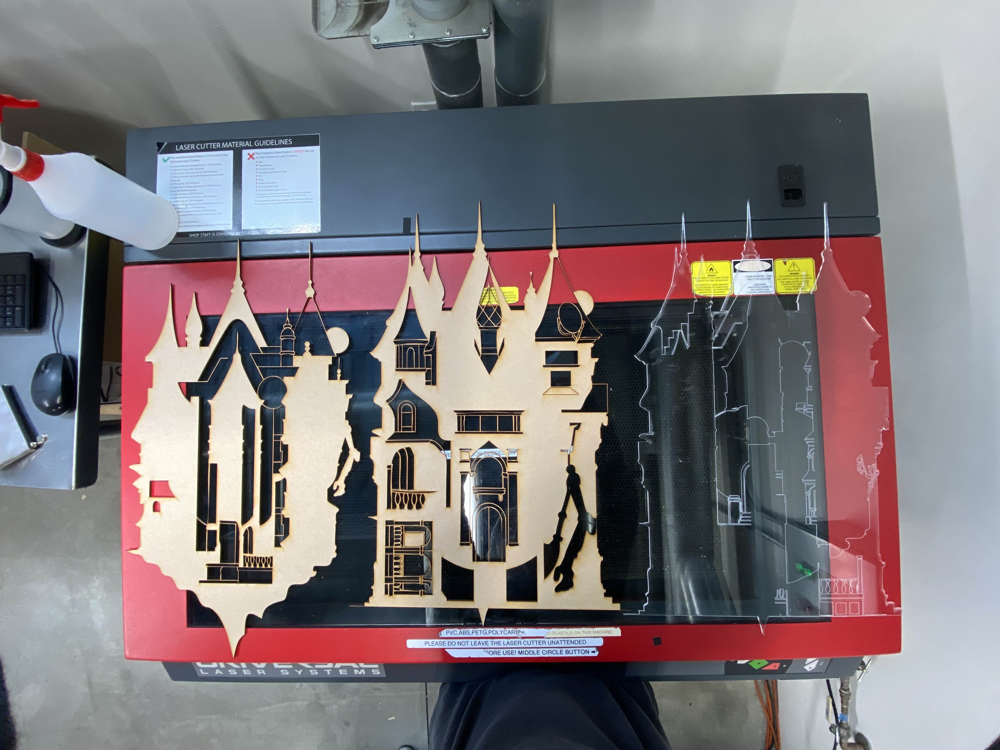
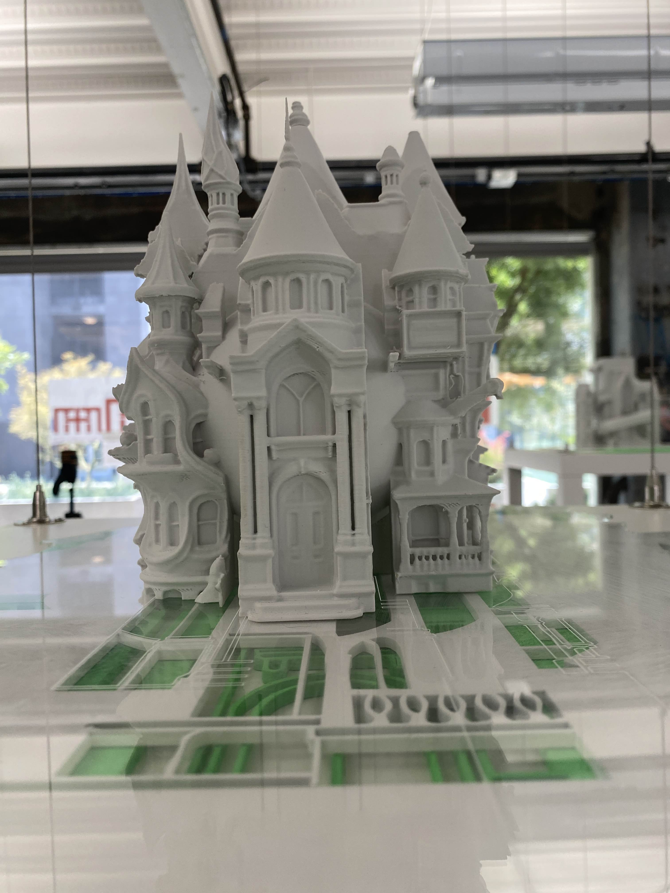
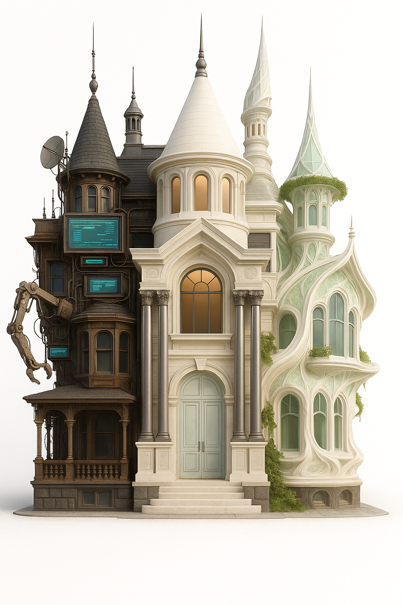
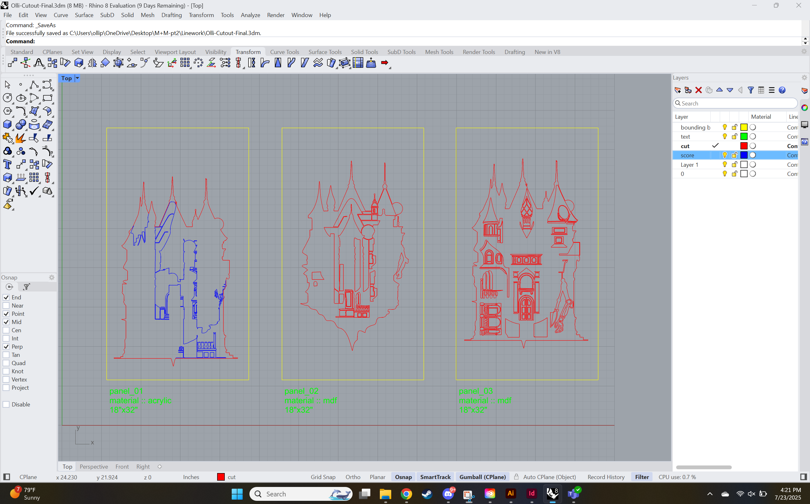

Ovamanner
Making+Meaning
Southern California Institute for Architecture


Making+Meaning marked my first deliberate step into the world of architecture, expanding my creative process through hands-on experimentation and conceptual rigor. Working with tools like Rhino, ZBrush, Grasshopper, and robotic fabrication technologies, I explored the intersection of computation, form, and philosophy to give shape to speculative futures. This experience not only deepened my design practice—it solidified my commitment to architecture as both a craft and a vessel for shaping the world to come.




OvaManner is a speculative architectural work composed of three symbolic sections: utopian, dystopian, and classical futurist. Each third draws from a different memetic vision of the future, rendered not just in form but in ideological substructure. Created through a design stack combining AI and fabrication tools—GPT-4, Midjourney, ZBrush, Rhino, and MakerSpace—the work integrates speculative design with material practice to explore what futures are possible, and which are worth building.